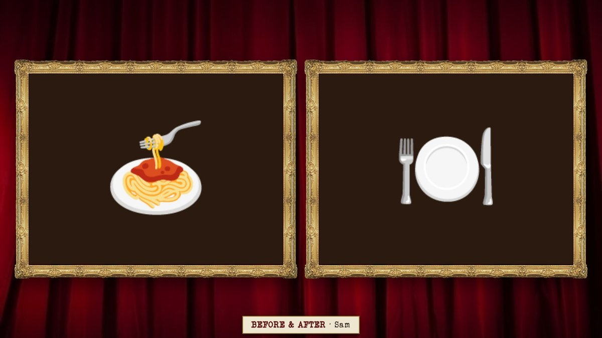
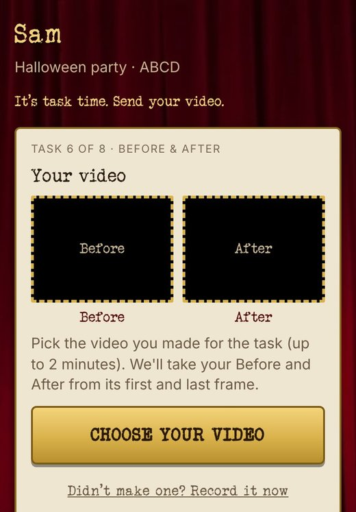
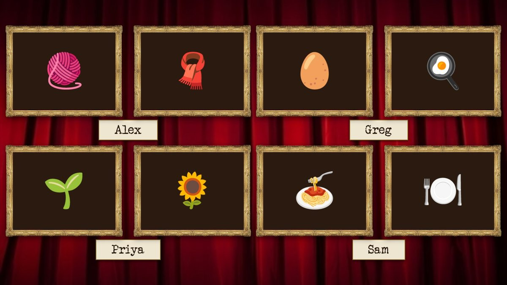
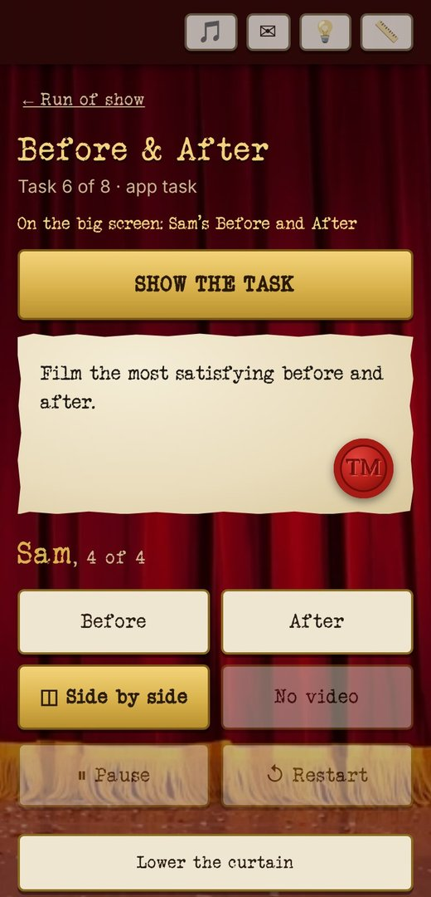

<title>Before &amp; After</title>
<meta name="description" content="Before &amp; After, an app task for a Taskmaster party: Everyone films one short video that goes from before to after. The TV shows the first and last frames side by side, then plays the whole thing.">
<link rel="stylesheet" href="task-pages.css">
<main class="task-page">
  <a class="back" href="index.html">← Taskmaster Party</a>
  <section class="hero">
    <div class="eyebrow">Taskmaster · an app task</div>
    <h1>Before &amp; After</h1>
    <p>Everyone films one short video that goes from before to after. The TV shows the first and last frames side by side, then plays the whole thing.</p>
    <figure class="tv">
      <div class="frame"></div>
      <figcaption class="caption">On the TV: Sam's before and after</figcaption>
    </figure>
    <div class="card glance">
      <h3>At a glance</h3>
      <dl>
        <dt>Who plays</dt><dd>Everyone at once.</dd>
        <dt>How long</dt><dd>Filming takes a while; about 2 minutes each to show</dd>
        <dt>Your prep</dt><dd>Write the task, e.g. the most satisfying before and after.</dd>
        <dt>To bring</dt><dd>Nothing.</dd>
        <dt>Winner</dt><dd>Your call: you give the points.</dd>
      </dl>
    </div>
  </section>

  <section class="moment" id="turn">
    <header>
      <span class="step">1 · The task</span>
      <h2>One video, two pictures.</h2>
      <p>Everyone films up to two minutes on their own phone. The app takes the first frame as Before and the last as After, so the reveal writes itself.</p>
    </header>
    <div class="phones pair one">
      <figure>
        <div class="phone"></div>
        <figcaption class="caption">Your phone: choose your video</figcaption>
      </figure>
    </div>
  </section>

  <section class="moment" id="tv">
    <header>
      <span class="step">2 · On the TV</span>
      <h2>Then everyone's, side by side.</h2>
      <p>After each guest's video, put everyone's befores and afters up at once.</p>
    </header>
    <figure class="tv">
      <div class="frame"></div>
      <figcaption class="caption">Everyone's at once</figcaption>
    </figure>
  </section>

  <section class="moment" id="host">
    <header>
      <span class="step">3 · The host</span>
      <h2>Before, after, then roll the tape.</h2>
      <p>Your phone steps through each guest: Before, After, side by side, then the video with play and restart.</p>
    </header>
    <div class="phones pair one">
      <figure>
        <div class="phone"></div>
        <figcaption class="caption">Sam's is up</figcaption>
      </figure>
    </div>
  </section>

  <section class="signoff">
    <p>All you need is a task and a room full of phones that already film.</p>
    <h2>Your time starts now.</h2>
    <nav class="more">
      <a href="tasks.html">← All the tasks</a>
      <a href="flipchart.html">Next: Flipchart →</a>
    </nav>
  </section>
</main>
